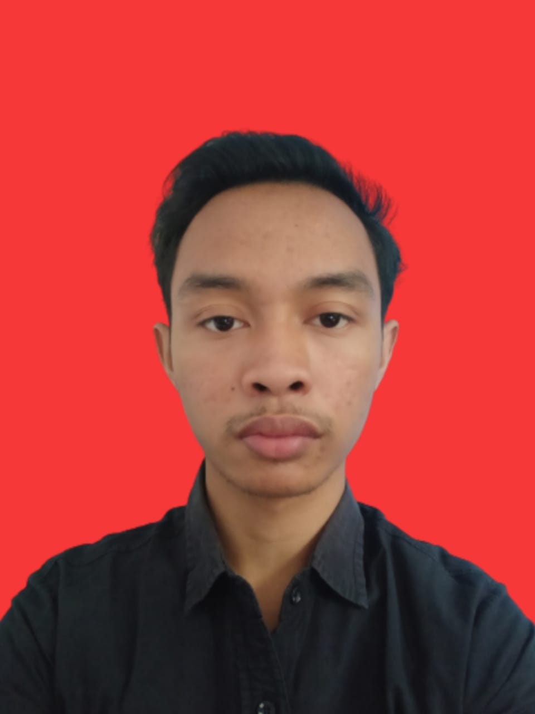

DIMAS AJI NUGROHO
welcome to my profile
PENDIDIKAN
SDN kedung waringin 04 (2009-2015)
SMP cakrawala (2015-2018)
SMAN 1 Bojonggede (2018-2021)
ORGANISASI
KSPM (Kelompok Studi Pelajar Muslim)
Anggota divisi ekonomi sosial dan masyarakat
(2022-2023)
Rohis AL-Fath SMAN 1 Bojonggede
Ketua umum
(2020/2021
MPK (Majelis Perwakilan Kelas) SMAN 1 Bojonggede
Anggota Komisi A
(2020/2021)
SMAN 1 Bojonggede
Anggota umum
(2018/2019)
PROFIL

TTL : Bogor, 08 maret 2003
Domisili : Bogor, bojonggede
Agama : islam
email : dimdimcraft.id@gmail.com
no. telepon : 081959125564